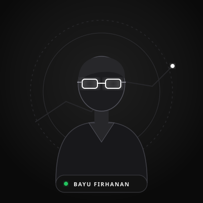

Halo! Saya Bayu Firhanan (Dazzle). Seorang Data Analyst sekaligus Data Scientist yang menggabungkan analitik mendalam dengan sains data modern. Bagi saya, mengedepankan data adalah tujuan utama untuk mengungkap pola tersembunyi, memecahkan masalah kompleks, dan mendorong keputusan yang presisi.

DAZZLE / DATA ANALYST & SCIENTIST
Bekerja sebagai Data Analyst sekaligus Data Scientist memungkinkan saya melihat siklus data secara holistik—mulai dari ekstraksi data mentah, validasi hipotesis statistik, hingga pemodelan machine learning.
Bagi saya, data bukan sekadar angka atau tabel, melainkan instrumen paling krusial untuk menemukan efisiensi, memprediksi tren masa depan, dan mengambil keputusan bisnis yang terukur dan presisi.
Eksplorasi data komprehensif, Business Intelligence, dan visualisasi dashboard interaktif.
Pemodelan prediktif, algoritma klasifikasi, dan pemanfaatan sains data modern.
Koleksi proyek data analytics & data science yang pernah saya kembangkan secara end-to-end.
Pemodelan prediktif machine learning untuk mendeteksi potensi churn pelanggan dengan algoritma Random Forest & XGBoost, lengkap dengan feature importance analysis.
Dashboard visual interaktif berbasis Power BI & SQL untuk monitoring KPI bisnis, visualisasi funnel penjualan, dan proyeksi target kuartalan.
Analisis asosiasi pola belanja konsumen dengan algoritma Apriori dan eksplorasi data komprehensif untuk optimasi strategi cross-selling e-commerce.
Penerapan model peramalan deret waktu untuk memprediksi tren pergerakan nilai pasar, estimasi volatilitas, dan identifikasi anomali data keuangan.
QnA ? Silahkan hubungi saya secara langsung untuk diskusi
@Bayufirhanan
Kunjungi Profil0813-5268-9234 (Fast Response)
Chat SekarangBayufirhanan@gmail.com